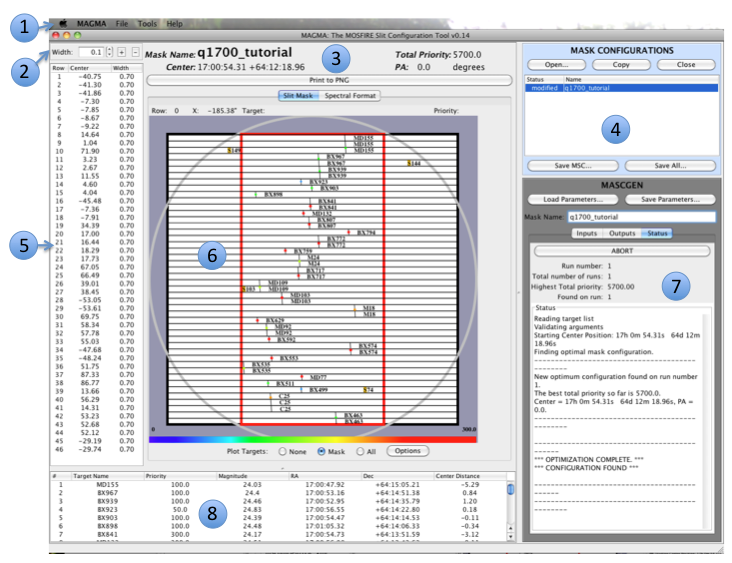

MAGMA Layout
The following image shows the main MAGMA interface.

- Menu Bar
- Slit Width Adjustment Panel
- Configuration Name and Pointing Panel
- Mask Configurations Panel
- Slit Table
- Mask Visualization Panel
- MASCGEN Panel
- Target List Table
NOTE: Depending on the display size of your computer screen, the Mask Configuration buttons may not appear when you load MAGMA. This can be changed by clicking Tools on the Menu Bar, then Customize.
Check the "Show Mask Configuration Buttons?" box and then click "OK".